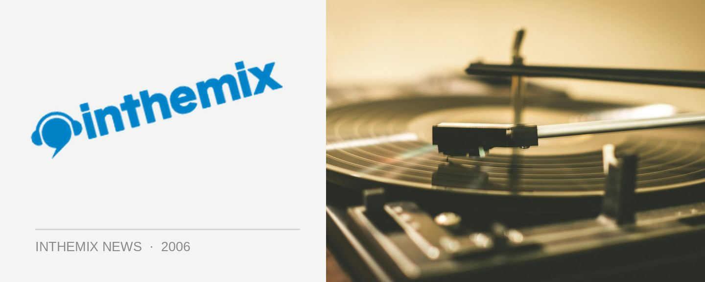

MTV secures The Metro for new live music show
The Metro is considered one of the very best venues in Sydney, across all genres of music whether it be rock and dance or anything else. MTV Networks Australia has just announced it will be utilizing The Metro for its newest live music show The Lair, which it is billing as “one of the biggest live local music series produced in Australia.”
The decision to shoot The Lair from The Metro was made by Ean Thorley, executive producer of MTV Networks Australia, to ensure the live music element of the show remains a focal point. “We wanted to steer as far away as possible from the glossy clinical studio look. Music has always been about getting dirty, sweaty and a bit crazy so we needed a venue that was going to give us the space and freedom to capture that,” says Thorley. “With the focus on live music, The Metro was a natural choice.”
As well as being used for The Lair, the venue will also become an official MTV space that will also be used for initiatives from the network.